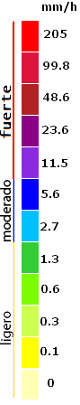

<div class="principal">
  <h1>Mapa meteorológico ciudad de Quito</h1>

  <div class="centro">
    <div id="map"></div>

    <div class="escala">
      
    </div>
    <div class="controles">
      <div class="playBack">
        <div class="play1">
          <button mat-fab (click)="Pausar()">
            <fa-icon [icon]="faPlay" *ngIf="play == false"></fa-icon>
            <fa-icon [icon]="faPause" *ngIf="play"></fa-icon>
          </button>

          <button mat-fab (click)="Atras()">
            <fa-icon [icon]="faStepBackward"></fa-icon>
          </button>
          <button mat-fab (click)="Adelante()">
            <fa-icon [icon]="faStepForward"></fa-icon>
          </button>
        </div>
      </div>

      <div class="slider">
        <div class="Fecha">
          <label>{{ this.date }} </label>
        </div>
        <mat-slider
          [thumbLabel]="true"
          tickInterval="3600"
          step="1"
          min="0"
          max="{{ max - 1 }}"
          [value]="value"
          (input)="changeValue($event)"
        >
        </mat-slider>
      </div>
    </div>
  </div>
</div>
